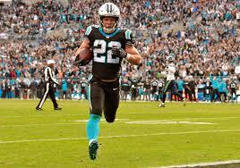
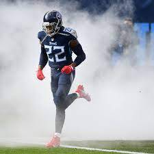
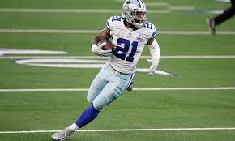

Link : H/L video of Christian McCaffrey
1. Christian McCaffrey
Link : H/L video of Christian McCaffrey
| Year | Team | Games | Rushing | Receiving | Returning | Fumbles | ||||||||||||||
|---|---|---|---|---|---|---|---|---|---|---|---|---|---|---|---|---|---|---|---|---|
| GP | GS | Att | Yds | Avg | Lng | TD | Rec | Yds | Avg | Lng | TD | Ret | Yds | Avg | Lng | TD | Fum | Lost | ||
| 2017 | CAR | 16 | 10 | 117 | 435 | 3.8 | 40 | 2 | 80 | 651 | 8.1 | 37 | 5 | 25 | 220 | 8.8 | 25 | 0 | 2 | 1 |
| 2018 | CAR | 16 | 16 | 219 | 1,098 | 5.0 | 59 | 7 | 107 | 867 | 8.1 | 38 | 6 | 0 | 0 | 0.0 | 0 | 0 | 4 | 1 |
| 2019 | CAR | 16 | 16 | 278 | 1,387 | 4.9 | 84T | 15 | 116 | 1,005 | 8.7 | 25T | 4 | 0 | 0 | 0.0 | 0 | 0 | 1 | 0 |
| 2020 | CAR | 3 | 3 | 59 | 225 | 3.8 | 15 | 5 | 17 | 149 | 8.8 | 24 | 1 | 0 | 0 | 0.0 | 0 | 0 | 0 | 0 |
| Career | 51 | 45 | 682 | 3,145 | 4.6 | 84T | 29 | 320 | 2,672 | 8.4 | 38 | 16 | 25 | 220 | 8.8 | 25 | 0 | 7 | 2 | |

Link : H/L video of Derek Henry
2. Derek Henry
Link : H/L video of Derek Henry
| Year | Team | Games | Rushing | Receiving | Fumbles | ||||||||||
|---|---|---|---|---|---|---|---|---|---|---|---|---|---|---|---|
| GP | GS | Att | Yds | Avg | Lng | TD | Rec | Yds | Avg | Lng | TD | Fum | Lost | ||
| 2017 | TEN | 16 | 2 | 176 | 744 | 4.2 | 75T | 5 | 11 | 136 | 12.4 | 66T | 1 | 1 | 0 |
| 2018 | TEN | 16 | 12 | 215 | 1,059 | 4.9 | 99T | 12 | 15 | 99 | 6.6 | 21 | 0 | 1 | 1 |
| 2019 | TEN | 15 | 15 | 303 | 1,540 | 5.1 | 74T | 16 | 18 | 206 | 11.4 | 75T | 2 | 5 | 3 |
| 2020 | TEN | 16 | 16 | 378 | 2,027 | 5.4 | 94T | 17 | 19 | 114 | 6.0 | 53 | 0 | 3 | 2 |
| Career | 78 | 46 | 1,182 | 5,860 | 5.0 | 99T | 55 | 76 | 692 | 9.1 | 75T | 3 | 10 | 6 | |
3. Dalvin Cook
Link : H/L video of Dalvin Cook
| Year | Team | Games | Rushing | Receiving | Fumbles | ||||||||||
|---|---|---|---|---|---|---|---|---|---|---|---|---|---|---|---|
| GP | GS | Att | Yds | Avg | Lng | TD | Rec | Yds | Avg | Lng | TD | Fum | Lost | ||
| 2017 | MIN | 4 | 4 | 74 | 354 | 4.8 | 33 | 2 | 11 | 90 | 8.2 | 36 | 0 | 1 | 1 |
| 2018 | MIN | 11 | 10 | 133 | 615 | 4.6 | 70 | 2 | 40 | 305 | 7.6 | 27 | 2 | 2 | 2 |
| 2019 | MIN | 14 | 14 | 250 | 1,135 | 4.5 | 75T | 13 | 53 | 519 | 9.8 | 31 | 0 | 4 | 2 |
| 2020 | MIN | 14 | 14 | 312 | 1,557 | 5.0 | 70T | 16 | 44 | 361 | 8.2 | 50T | 1 | 5 | 3 |
| Total | 43 | 42 | 769 | 3,661 | 4.8 | 75T | 33 | 148 | 1,275 | 8.6 | 50T | 3 | 12 | 8 | |
4. Alvin Kamara
Link : H/L video of Alvin Kamara
| Year | Team | Games | Rushing | Receiving | Returning | Fumbles | ||||||||||||||
|---|---|---|---|---|---|---|---|---|---|---|---|---|---|---|---|---|---|---|---|---|
| GP | GS | Att | Yds | Avg | Lng | TD | Rec | Yds | Avg | Lng | TD | Ret | Yds | Avg | Lng | TD | Fum | Lost | ||
| 2017 | NO | 16 | 3 | 120 | 728 | 6.1 | 74T | 8 | 81 | 826 | 10.2 | 40 | 5 | 11 | 347 | 31.5 | 106T | 1 | 1 | 1 |
| 2018 | NO | 15 | 13 | 194 | 883 | 4.6 | 49T | 14 | 81 | 709 | 8.8 | 42 | 4 | 16 | 208 | 13.0 | 50 | 0 | 1 | 0 |
| 2019 | NO | 14 | 9 | 171 | 797 | 4.7 | 40T | 5 | 81 | 533 | 6.6 | 41 | 1 | 4 | 30 | 7.5 | 27 | 0 | 4 | 1 |
| 2020 | NO | 15 | 10 | 187 | 932 | 5.0 | 49 | 16 | 83 | 756 | 9.1 | 52T | 5 | 3 | 44 | 14.7 | 31 | 0 | 1 | 0 |
| Total | 60 | 35 | 672 | 3,340 | 5.0 | 74T | 43 | 326 | 2,824 | 8.7 | 52T | 15 | 34 | 629 | 18.5 | 106T | 1 | 7 | 2 | |

Link : H/L video of Ezekiel Elliott
5. Ezekiel Elliott
Link : H/L video of Ezekiel Elliott
| Year | Team | Games | Rushing | Receiving | Fumbles | ||||||||||
|---|---|---|---|---|---|---|---|---|---|---|---|---|---|---|---|
| GP | GS | Att | Yds | Avg | Lng | TD | Rec | Yds | Avg | Lng | TD | Fum | Lost | ||
| 2017 | DAL | 10 | 10 | 242 | 983 | 4.1 | 30 | 7 | 26 | 269 | 10.3 | 72T | 2 | 1 | 1 |
| 2018 | DAL | 15 | 15 | 304 | 1,434 | 4.7 | 41 | 6 | 77 | 567 | 7.4 | 38 | 3 | 6 | 1 |
| 2019 | DAL | 16 | 16 | 301 | 1,357 | 4.5 | 33T | 12 | 54 | 420 | 7.8 | 27 | 2 | 3 | 2 |
| 2020 | DAL | 15 | 15 | 244 | 979 | 4.0 | 31 | 6 | 52 | 338 | 6.5 | 19 | 2 | 6 | 5 |
| Career | 71 | 71 | 1,413 | 6,384 | 4.5 | 60T | 46 | 241 | 1,957 | 8.1 | 83T | 10 | 21 | 10 | |